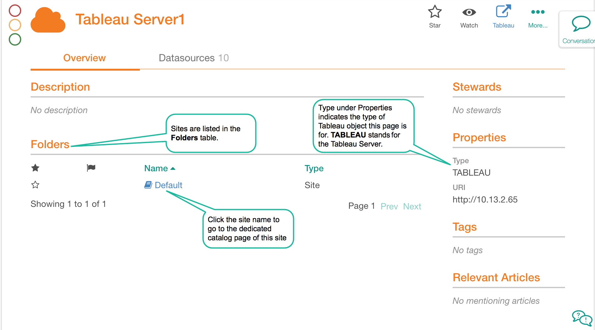
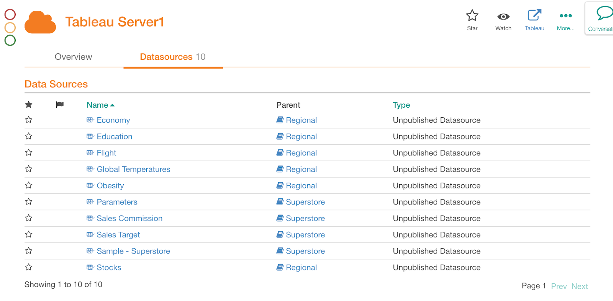
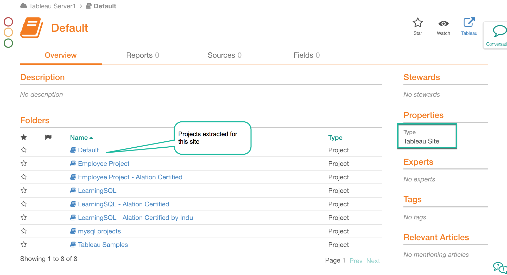
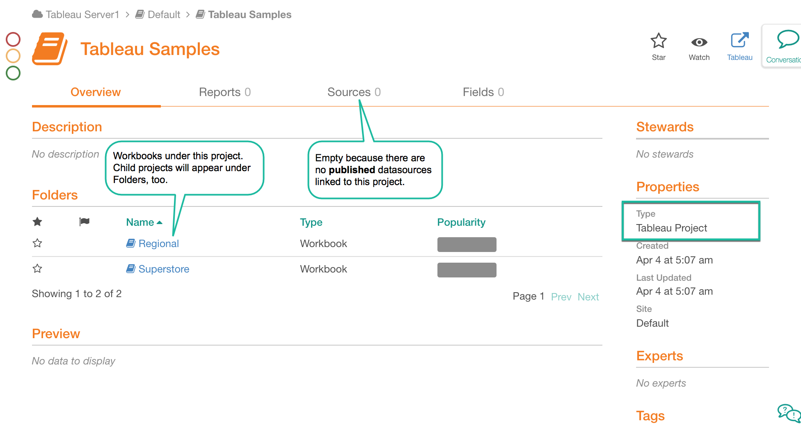
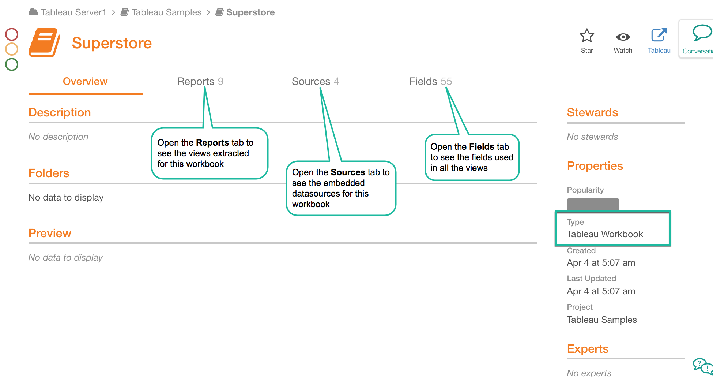
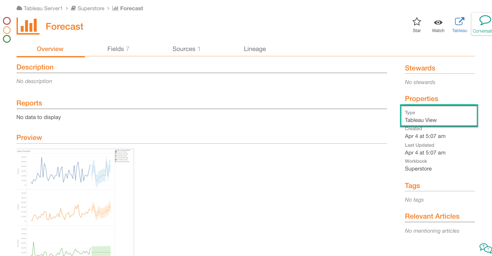
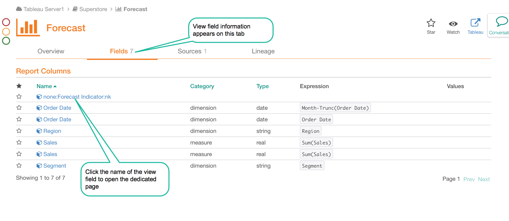
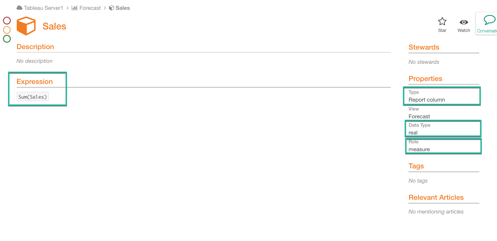
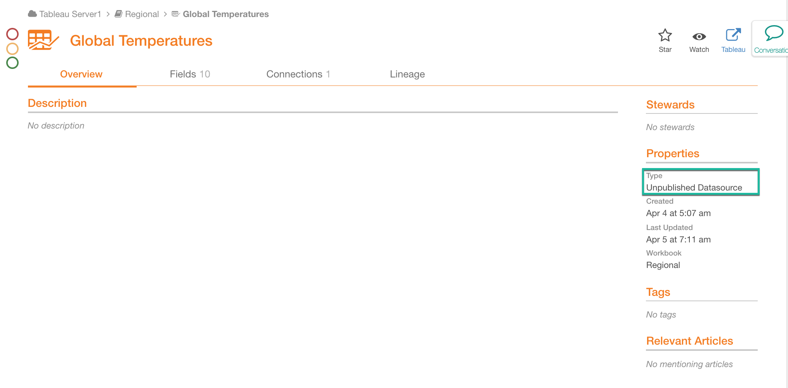
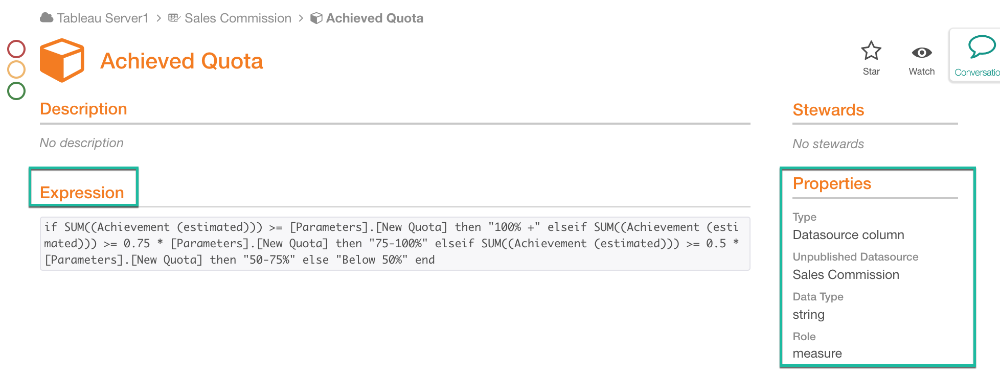

Overview of Catalog Pages for Tableau Sources on the Generic BI Model¶
Tableau Server Page¶
When you add a Tableau source to Alation, the top catalog page that nests all the other pages for this source will be the Tableau BI Server page.
Note
You can find the type of object the current catalog page is for in the Properties field on the right.
The Tableau Server page has built-in and custom fields currently associated with the BI Server template in your Alation instance. It has two tabs: Overview and Datasources.
Overview¶
The Overview page includes any custom and built-in fields associated with the object template and the list of its child objects. Thus, in the Folders field, you will find the Tableau sites extracted for this server with the latest metadata extraction. To view the catalog page for each specific site, click the site Name.
Tableau Server Page: Overview
{kind=link}
Data Sources¶
The data sources - both published and unpublished - are displayed on the Datasources tab. The workbooks that use them appear in the Parent column. To drill down to the catalog page of each specific data source, click its Name.
Tableau Server Page: Datasources
{kind=link}
Tableau Site Page¶
The site page lists the projects extracted from the current site. The page displays built-in and custom fields currently associated with the BI Folder template. The Tableau projects extracted for this site are listed in the Folders table. To view data for each specific project, click its Name.
The page has four tabs, but only the Overview tab will display data for the site. The other tabs - Reports, Sources, and Fields are not used for the site objects.
Sample Tableau Site Page
{kind=link}
Tableau Project Page¶
Each project page lists the child projects and workbooks extracted for the current project. The page displays built-in and custom fields currently associated with the BI Folder template. The projects and workbooks extracted for this parent project can be found in the Folders field under the Overview tab. To view data for each specific project or workbook, click its Name.
The Sources tab displays the published data sources used by workbooks in this project.
Tabs Reports and Fields are not used for the projects and will be empty.
Sample Tableau Project Page¶
{kind=link}
Tableau Workbook Page¶
The page will display built-in and custom fields currently associated with the BI Folder template.
Each workbook page lists the Views extracted for this workbook. The views can be found on the Reports tab of the page. The Folders field on the Overview tab is not used and will be empty for this type of Tableau object.
If a workbook is using unpublished data sources, they will be listed on the Sources tab.
The published data sources will not appear on this tab, even if the views may be using them. The workbook Sources tab only lists the embedded (unpublished) data sources. You can find the published data sources on the catalog pages of the Sheets (Dashboards and Reports) included in this workbook.
The data fields used by all the views in this workbook will be listed on the Fields tab.
Sample Tableau Workbook Page
{kind=link}
To open the dedicated catalog page of a specific view, data source, or field, click its Name.
Tableau View Page¶
Each view (Report or Dashboard) page is based on the BI Report template and includes:
a preview (if preview extraction is enabled) on the Overview tab
the fields (measures and dimensions) used in this view on the Fields tab
both published and unpublished datasources that are used in this view on the Sources tab
table-level data lineage on the Lineage tab.
To drill down into a field or datasource, click its Name.
Sample View Page¶
{kind=link}
View Field Page¶
{kind=link}
Each extracted view field has a catalog page based on the BI Report Column template. The Properties field on the right will indicate if this field is a measure or a dimension and what data type it holds. The formula used to calculate the field can be found under Expression.
Sample View Field Page
{kind=link}
Data Source Page¶
Clicking on a Tableau data source name on any of the catalog pages where you find it, will bring you to the dedicated page for this data source. The data source is the source of data that is used to create Tableau views. Its page is based on the BI Datasource template and includes tabs:
Overview displays the built-in and custom fields currently associated with the template
Fields lists the datasource columns and their properties
Connections shows the connection information for the datasource and points to the source of the data, outside the Tableau server. For example, it will show if the datasource is an extract or a live database connection and what database connection is comes from. The type of connection is indicated under Connection Type in Properties on the right of the page.
Lineage for this datasource, shows where the data in the data source comes from.
Sample Tableau Data Source Page¶
{kind=link}
Datasource Column Page¶
Clicking on the name of a datasource field will bring you to its dedicated page that is based on the BI Datasource Column template. The Expression field will show how the data in this field was calculated.
Sample Datasource Column Page
{kind=link}